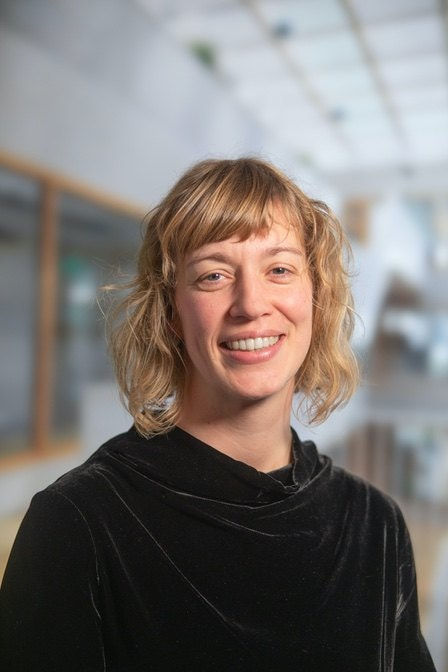

Haltebuddy:
The making of

Recap focusteam: multidisciplinary team, we use design thinking as our
main approach
The whole team participates in design research, runs experiments to test
hypotheses. We try to get out of the building where we can.

Eveline

Hiske

Truke

Pita

Dianne

Wieteke
Heike

Lino
Shayla
Jurian
Project manager
Project manager
Project manager
Strategist
Strategist
Psychologist
Service designer
Data scientist
Data scientist
Product developer
Product workflow
- Uncover hypotheses that can be tested with simple prototypes
- Create landing pages, simple interactives, notebooks and test
- Build towards MVP if it can solve one of the big problems
-
Iterate and test together with shareholder / team that will expand on
the MVP
Long term goal of current project: future proofing supplementary public
transport
Short term goal: make public transport more accessible to physically
disabled people
2 promising problem spaces:
- Visibility of people with disabilities (Halteknop)
- Personalize accessibility information (Haltebuddy)
Halteknop
Halteknop
ü§î "People don't always see you"
üì¢ "Asking for help can be tiring"
üí° Visibility as a service!
Haltebuddy
Haltebuddy
ü§î Accessibility is not binary
üìö Data on stop properties
üí° Connect data & profile
üë©üèΩ‚Äçü¶º Personalized routing?
Data analysis / prototyping example: accessible stops
Challenges
1. Trying to iterate quickly while getting access to data and resources
can take forever → frustration on both sides
Challenges
2. A proven hypotheses and MVP is only good if someone will continue
with the idea and findings
Challenges
3. We are waiting with bells on for a simple, privacy approved solution
for static hosting, auth, and a simple db